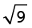
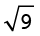
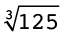
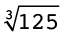

2 Integers
2.1 Which numbers are smaller than 0?
why people decided to have negative numbers
Numbers such as -7 and -500, the additive inverses of whole numbers, are included with all the whole numbers and called integers.
Fractions can be negative
too, e.g. -  and -3,46.
and -3,46.
The natural numbers are used for counting, and fractions (rational numbers) are used for measuring. Why do we also have negative numbers?
When a larger number is subtracted from a smaller number, the answer may be a negative number: 5 - 12 = -7, and this number is called negative 7.
One of the most important reasons for inventing negative numbers was to provide solutions for equations like these:
|
Equation |
Solution |
Required property of negative numbers |
|
17 + x = 10 |
x = -7 because17 + (-7) = 17 - 7 = 10 |
1. Adding a negative number is just like subtracting the corresponding positive number |
|
5 - x = 9 |
x = -4 because5 - (-4) = 5 + 4 = 9 |
2. Subtracting a negative number is just like adding the corresponding positive number |
|
20 + 3x = 5 |
x = -5 because3 \times (-5) = -15 |
3. The product of a positive number and a negative number is a negative number |
properties of integers
1. In each case, state what number will make the equation true. Also state which of the properties of integers in the table above, is demonstrated by the equation.
(a) 20 - x = 50 (b) 50 + x = 20
(c) 20 - 3x = 50 (d) 50 + 3x = 20
2.2 Adding and subtracting with integers
Addition and subtraction of negative numbers
Examples: (-5) + (-3) and (-20) - (-7)
This is done in the same way as the addition and subtraction of positive numbers.
(-5) + (-3) can also be written as -5 + (-3) or as -5 + -3
(-5) + (-3) = -8 and -20 - (-7) = -13
This is just like 5 + 3 = 8 and 20 - 7 =13, or R5 + R3 = R8, and R20 - R7 = R13.
Subtraction of a larger number from a smaller number
Examples: 5 - 9 and 29 - 51
Let us first consider the following:
5 + (-5) = 0 10 + (-10) = 0 and 20 + (-20) = 0
If we subtract 5 from 5, we get 0, but then we still have to subtract 4:
5 - 9 = 5 - 5 - 4
We know that -9 = (-4) + (-5)
= 0 - 4
= -4
Suppose the numbers are larger, e.g. 29 - 51:
29 - 51 = 29 - 29 - 22
-51 = (-29) + (-22)
How much will be left of the 51, after you have subtracted 29 from 29 to get 0?
How can we find out? Is it 51 - 29?
Addition of a positive and a negative number
Examples: 7 + (-5); 37 + (-45) and (-13) + 45
The following statement is true if the unknown number is 5:
20 - (a certain number) = 15
We also need numbers that will make sentences like the following true:
20 + (a certain number) = 15
But to go from 20 to 15 you have to subtract 5.
The number we need to make the sentence 20 + (a certain number) = 15 true must have the following strange property:
If you add this number, it should have the same effect as subtracting 5.
So mathematicians agreed that the number called negative 5 will have the property that if you add it to another number, the effect will be the same as subtracting the natural number 5.
This means that mathematicians agreed that 20 + (-5) is equal to 20 - 5.
In other words, instead of adding negative 5 to a number, you may subtract 5.
Adding a negative number has the same effect as subtracting a corresponding natural number.
For example: 20 + (-15) = 20 - 15 = 5.
Subtraction of a negative number
We have dealt with cases like -20 - (-7) on the previous page.
The following statement:
25 + (a certain number) = 30
is true if the number is 5
We also need a number to make this statement true:
25 - (a certain number) = 30
If you subtract this number, it should have the same effect that adding 5.
It was agreed that 25 - (-5) is equal to 25 + 5
Instead of subtracting the negative number, you add the corresponding positive number (the additive inverse).
8 - (-3) = 8 + 3
= 11
-5 - (-12) = -5 + 12
= 7
We may say that for each "positive" number there is a corresponding or opposite negative number. Two positive and negative numbers that correspond, for example 3 and (-3), are called additive inverses.
Subtraction of a positive number from a negative number
For example: -7 - 4 actually means (-7) - 4.
Instead of subtracting a positive number, you add the corresponding negative number.
-7 - 4 can be seen as (-7) + (-4) = -11
calculations with integers
Calculate.
1. -7 + 18 2. 24 - 30 - 7
3. -15 + (-14) - 9 4. 35 - (-20)
5. 30 - 47 6. (-12) - (-17)

2.3 Multiplying and dividing with integers
multiplication with integers
1. Calculate.
(a) -7 + -7 + -7 + -7 + -7 + -7 + -7 + -7 + -7 + -7
(b) -10 + -10 + -10 + -10 + -10 + -10 + -10
(c) 10 \times (-7) (d) 7 \times (-10)
2. Say whether you agree (✓) or (✗) disagree with each statement.
(a) 10 \times (-7) = 70 (b) 9 \times (-5) = (-9) \times 5
(c) (-7) \times 10 = 7 \times (-10) (d) 9 \times (-5) = -45
(e) (-7) \times 10 = 10 \times (-7) (f) 5 \times (-9) = 45
Multiplication of integers is commutative:
(-20) \times 5 = 5 \times (-20)
the distributive property
1. Calculate each of the following. Note that brackets are used for two purposes in these expressions: to indicate that certain operations are to be done first, and to show the integers.
(a) 20 + (-5) (b) 4 \times (20 + (-5)) (c) 4 \times 20 + 4 \times (-5)
(d) (-5) + (-20) (e) 4 \times ((-5) + (-20)) (f) 4 \times (-5) + 4 \times (-20)
2. If you worked correctly, your answers for question 1 should be 15; 60; 60; -25; -100 and -100. If your answers are different, check to see where you went wrong and correct your work.
3. Calculate each of the following where you can.
(a) 20 + (-15) (b) 4 \times (20 + (-15)) (c) 4 \times 20 + 4 \times (-15)
(d) (-15) + (-20) (e) 4 \times ((-15) + (-20)) (f) 4 \times (-15) + 4 \times (-20)
(g) 10 + (-5) (h) (-4) \times (10 + (-5)) (i) (-4) \times 10 + ((-4) \times (-5))
4. What property of integers is demonstrated in your answers for questions 3(a) and (g)?
Explain your answer.
In question 3(i) you had to multiply two negative numbers. What was your guess?
We can calculate (-4) \times (10 + (-5)) as in (h). It is (-4) \times 5 = -20
If we want the distributive property to be true for integers, then (-4) \times 10 + (-4) \times (-5) must be equal to -20.
(-4) \times 10 + (-4) \times (-5) = -40 + (-4) \times (-5)
Then (-4) \times (-5) must be equal to 20.
5. Calculate:
(a) 10 \times 50 + 10 \times (-30) (b) 50 + (-30)
(c) 10 \times (50 + (-30)) (d) (-50) + (-30)
(e) 10 \times (-50) + 10 \times (-30) (f) 10 \times ((-50) + (-30))
- •
- • The product of two positive numbers is a positive number, for example 5 \times 6 = 30.
- • The product of a positive number and a negative number is a negative number, for example 5 \times (-6) = -30.
- • The product of a negative number and a positive number is a negative number, for example (-5) \times 6 = -30.
6. (a) Underline the numerical expression below which you would expect to have the same answers. Do not do the calculations.
16 \times (53 + 68) 53 \times (16 + 68) 16 \times 53 + 16 \times 68 16 \times 53 + 68
(b) What property of operations is demonstrated by the fact that two of the above expressions have the same value?
7. Consider your answers for question 5.
(a) Does multiplication distribute over addition in the case of integers?
(b) Illustrate your answer with two examples.
8. Underline the numerical expression below which you would expect to have the same answers. Do not do the calculations now.
10 \times ((-50) - (-30)) 10 \times (-50) - (-30) 10 \times (-50) - 10 \times (-30)
9. Do the three sets of calculations given in question 8.
10. Calculate (-10) \times (5 + (-3)).
11. Now consider the question whether multiplication by a negative number distributes over addition and subtraction of integers. For example, would (-10) \times 5 + (-10) \times (-3) also have the answer -20, like (-10) \times (5 + (-3))?
To make sure that multiplication distributes over addition and subtraction in the system of integers, we have to agree that
(a negative number) \times (a negative number) is a positive number,
for example (-10) \times (-3) = 30.
12. Calculate each of the following.
(a) (-20) \times (-6) (b) (-20) \times 7
(c) (-30) \times (-10) + (-30) \times (-8) (d) (-30) \times ((-10) + (-8))
(e) (-30) \times (-10) - (-30) \times (-8) (f) (-30) \times ((-10) - (-8))
Here is a summary of the properties of integers that make it possible to do calculations with integers:
- •
- • When a number is added to its additive inverse, the result is 0. For example, (+12) + (-12) = 0.
- • Adding an integer has the same effect as subtracting its additive inverse. For example, 3 + (-10) can be calculated by doing 3 - 10, and the answer is -7.
- • Subtracting an integer has the same effect as adding its additive inverse. For example, 3 - (-10) can be calculated by calculating 3 + 10 is 13.
- • The product of a positive and a negative integer is negative. For example, (-15) \times 6 = -90.
- • The product of a negative and a negative integer is positive. For example (-15) \times (-6) = 90.
division with integers
1. Calculate
(a) 5 \times (-7) (b) (-3) \times 20
= -35
= -60
(c) (-5) \times (-10) (d) (-3) \times (-20)
= 50
= 60
2. Use your answers in question 1 to determine the following:
(a) (-35) \div 5 (b) (-35) \div (-7)
= -7
= 5
(c) (-60) \div 20 (d) (-60) \div (-3)
= -3
= 20
(e) 50 \div (-5) (f) 50 \div (-10)
= -10
= -5
(g) 60 \div (-20) (h) 60 \div (-3)
= -3
= -20
- •
- • The quotient of a positive number and a negative number is a negative number.
- • The quotient of two negative numbers is a positive number.
mixed calculations with integers
1. Calculate.
(a) 20(-50 + 7) (b) 20 \times (-50) + 20 \times 7
= 20(-43) = -860
= -1 000 + 140 = -860
(c) 20(-50 + -7) (d) 20 \times (-50) + 20 \times -7
= 20(-57) = -1 140
= -1 000 - 140 = -1 140
(e) -20(-50 + -7) (f) -20 \times -50 + -20 \times -7
= -20(-57) = 1 140
= 1 000 + 140 = 1 140
2. Calculate.
(a) 40 \times (-12 + 8) -10 \times (2 + -8) - 3 \times (-3 - 8)
(b) (9 + 10 - 9) \times 40 + (25 - 30 - 5) \times 7
(c) -50(40 - 25 + 20) + 30(-10 + 7 + 13) - 40(-16 + 15 - 2)
(d) -4 \times (30 - 50) + 7 \times (40 - 70) - 10 \times (60 - 100)
(e) -3 \times (-14 - 6 + 5) \times (-13 - 7 + 10) \times (20 - 10 - 15)

2.4 Powers, roots and word problems
Answer all questions in this section without using a calculator.
1. Complete the tables.
|
(a) |
x |
1 |
2 |
3 |
4 |
5 |
6 |
7 |
8 |
9 |
10 |
11 |
12 |
|
x2 |
|||||||||||||
|
x3 |
|
(b) |
x |
-1 |
-2 |
-3 |
-4 |
-5 |
-6 |
-7 |
-8 |
-9 |
-10 |
-11 |
-12 |
|
x2 |
|||||||||||||
|
x3 |
The symbol
 means that you must take
the positive square root of the
number.
means that you must take
the positive square root of the
number.
Both 10 and (-10) are called square roots of 100.
2. Calculate the following:
(a)  -  (b)
-  (b)  + (-
+ (-  )
)
= 2 - 3 = -1
= 3 - 4 = -1
(c) -(32) (d) (-3)2
= -9
= 9
(e) 42 - 62 + 12 (f) 33 - 43 - 23 - 13
= 16 - 36 + 1
= 27 - 64 - 8 - 1
= -19
= -46
(g)  -
-  \times  (h) -(42)(-1)2
\times  (h) -(42)(-1)2
= 9 - 2 \times 5 or -9 - (-2) \times 5
= -(16)(1)
= 9 - 10 = -9 - (-10)
= -16
= -1 = 1
(i)  (j)
(j)
= 
= 
= 25 \div 5 = 5
=  =
= 
3. Determine the answer to each of the following:
(a) The overnight temperature in Polokwane drops from 11 °C to -2 °C. By how many degrees has the temperature dropped?
(b) The temperature in Estcourt drops from 2 °C to -1 °C in one hour, and then another two degrees in the next hour. How many degrees in total did the temperature drop over the two hours?
(c) A submarine is 75 m below the surface of the sea. It then rises by 21 m. How far below the surface is it now?
(d) A submarine is 37 m below the surface of the sea. It then sinks a further 15 m. How far below the surface is it now?